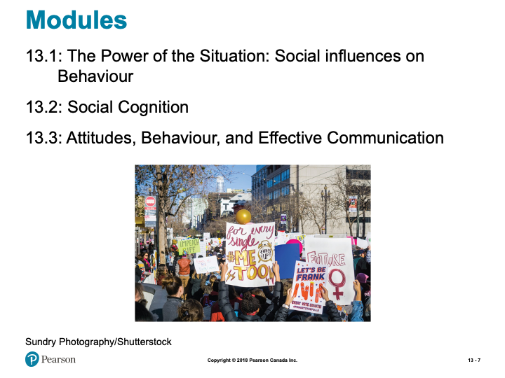
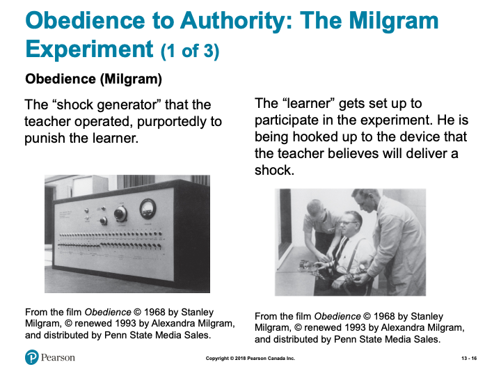
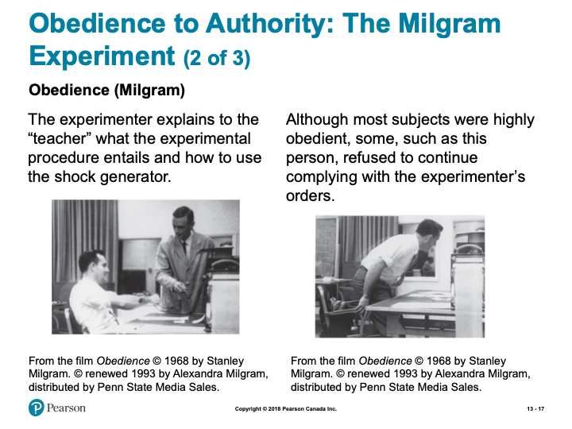
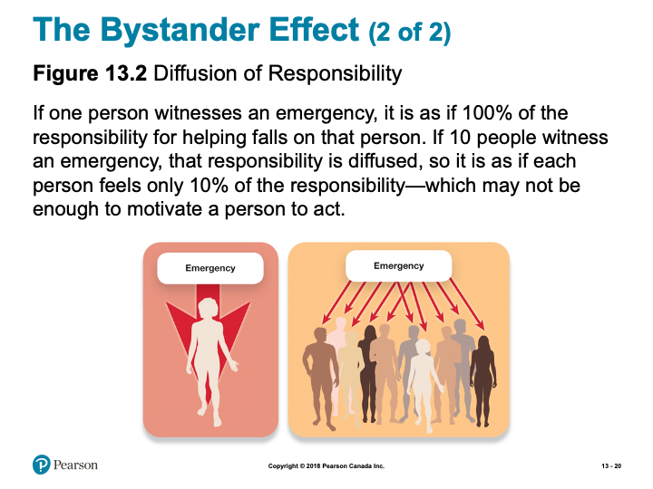
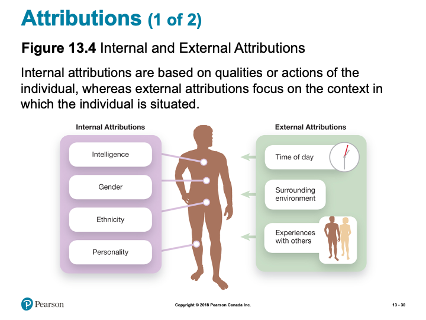
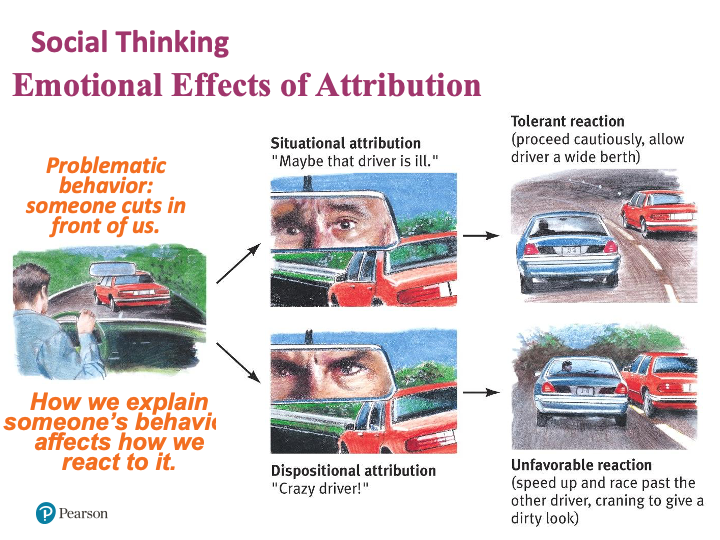
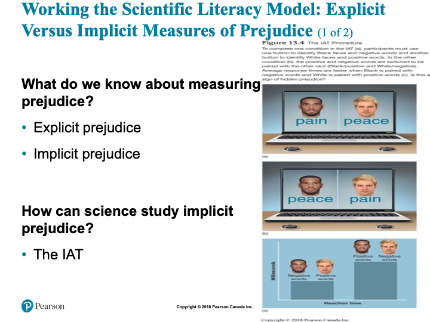

Obedience refers to the strongest level of social influence, the level at which an order is given and no choice is assumed. For example, we are expected to obey the law; we are not assumed to have a choice.
The study of obedience has proven somewhat unsettling for those with an optimistic view of human nature. Under orders, people have been willing to (a) subdue a helpless protesting individual with electric shock labeled extremely dangerous (Milgram, 1963); (b) administer a drug to a patient at double the recommended dosage, when the drug had not been approved by the hospital and when, contrary to regulations, the orders were given by an unfamiliar physician over the phone (Hofling et al., 1966), (c) place cute puppies in a restraining harness and give them strong electric shock (Sheridan and King, 1972). However, rather than uncovering a sadistic or evil type of individual these studies indicate that in the momentum of the situation, and under legitimate authority, people will perform acts which they would otherwise find abhorrent.
The ominous parallel with so-called “war crimes” is clear. Soldiers from many countries and in various wars have committed heinous acts of cruelty and slaughter against innocent men, women, and children. Yet they were not particularly evil or sadistic men; they were simply following orders. The research on obedience raises the chilling possibility that anyone of us would do the same thing in the same situation.
The potentially destructive power of religious authority was clearly demonstrated in 1978. In Jonestown, Guyana, more than 900 followers of religious-cult leader Jim Jones obeyed his orders and committed suicide by drinking poison. Christian leaders need to beware of the awesome power of their position, particularly when they claim to speak as the voice of God. (from Psychology and Christianity by Ronald Philipchalk, p. 214-215)
Avoiding Destructive Obedience
How can you protect yourself from participating in destructive obedience? Actually, you may have already taken the first step. Growing evidence suggests that when people learn about research findings such as these, they tend to change their behavior to take this knowledge into account (Sherman, 1980). There are, however, several more active steps you can take to reduce your vulnerability to malevolent authority.
First, you can question the legitimacy of the authority. Ask yourself if the person giving the orders really has the right to command you to do what he or she is asking. Special uniforms, insignias, and titles can create an aura of authority even where none exists. For example, Brad Bushman found that 72 % of pedestrians gave change to a young man when ordered to by a woman in uniform, compared to 48 % when the woman was dressed in business clothes. Bushman found that the nature of the uniform did not even have to be related to the order being given (Bushman, 1984, 1988).
Second, ask yourself if your obedience might cause harm to someone else. Remember that even if you act under legitimate authority you are still responsible for any harm you produce.
Third, talk to others about your misgivings. This can not only strengthen your personal resolve, but it may also convince others to join you as well. In one field experiment, 21 out of 22 nurses were prepared to obey an unfamiliar physician whose order violated hospital policy and possibly endangered the patients. The nurses had no chance to consult with anyone else (Hofling et al., 1966). In a second study, however, when the nurses were given the opportunity to contact their supervisors and other nurses, only 2 out of 18 were willing to obey (Rank & Jacobson, 1977).
Milgram also demonstrated the effect of support for disobedience. In one experiment he employed two additional confederates. They posed as co-teachers who, along with the real subject, gave shocks to the “learner.” One confederate refused to continue at 150 volts, the other confederate broke off at 210 volts. With this type of additional support, 90 % of the subjects refused to go all the way to the maximum shock—total obedience was reduced to 10 % (Milgram, 1974).
Finally, if you decide to defy authority, you might take a lesson from the conformity research and remember the power of calm, reasonable dissent. One of the most famous literary examples of defiance, Herman Melville’s Bartleby, the Scrivener, illustrates this “gentle rebellion:”
“Bartleby,” said I, “Ginger Nut is away; just step round to the Post Office, won’t you? (it was but a three minute walk), and see if there is anything for me.”
“I would prefer not to.”
“You will not?”
“I prefer not.”
I staggered to my desk, and sat there in a deep study. My blind inveteracy returned. Was there any other thing in which I could procure myself to be ignominiously repulsed by this lean, penniless wight?—my hired clerk? What added thing is there, perfectly reasonable, that he will be sure to refuse to do?
“Bartleby” - No answer
“Bartleby,” in a louder tone. - No answer.
“Bartleby,” I roared.
Like a very ghost, agreeably to the laws of magical invocation, at the third summons, he appeared at the entrance of his hermitage.
“Go to the next room, and tell Nippers to come to me.”
“I prefer not to,” he respectfully and slowly said, and mildly disappeared.
Bartleby manages to defy his employer and yet keep his job because his meek reply is so disarming. At times a more aggressive stance may be necessary, but remember, resistance is always possible. Obedience should not be blind. (from Invitation to Social Psychology by Ronald Philipchalk)
Unit 6 Social Psychology - Part 1
Overview
No single factor has more impact on shaping the quality and direction of your life over virtually every aspect of your existence than relationships. In a way, everyone is a social psychologist. People constantly form ideas/opinions about why a person or a group of people are acting the way they are. Social psychology is similar to what people find themselves naturally doing except it uses scientific tools to study these hypotheses (the ideas/opinions). Social psychologist are primarily interested in examining the different ways that individual’s effect groups of people and the way groups of people effect individual’s. In this unit you will be introduced to some historical studies and main concepts in this field. Topics covered in this chapter include social influences on behaviour, social impressions and judgements, the relationship between attitudes and behaviour, and effective communication. Unit 6 (Part 1) looks at attributes and actions, conformity, obedience, and compliance. Unit 7 (Part 2) examines prejudice and aggression, and, though not specifically covered in the textbook, yet important to social psychology, attraction and altruism.
Topics
This unit is divided into the following topics:
Learning Outcomes
By the end of this unit, student’s will be able to:
Activity Checklist
Here is a checklist of learning activities you will benefit from in completing this unit. You may find it useful for planning your work:
Read and Reflect
Read Krause et al. (2021). Revel for An Introduction to Psychological Science, 3rd Canadian Edition
Review Unit 6 - Slides
CLICK HERE
An Introduction to Psychological Science - Chapter 13 - Social Psychology
Biblical Word Study
6 And this is love: that we walk in obedience to his commands. As you have heard from the beginning, his command is that you walk in love.
Walk – Gr.\(\pi\epsilon\rho\iota\pi\alpha\tau\epsilon\omega\) (peripateō) – to tread about, walk about, and generally, to walk, to be walking; *to make one’s way, make progress;
to frequent, stay in, a place; to regulate one’s life, to conduct one’s self*, of the standard to which one governs his life; denoting either the state in which one is living, or the virtue or vice to which he is given.
True or False?

Slide showing - Modules for this chapter
Learning Objectives
The Person and the Environment
Mimicry, Norms, and Roles
Group Dynamics: Social Loafing and Social Facilitation
Slide showing - The Asch Conformity Experiment
Slide showing - Personal and Situational Factors Contribute to Conformity
Groupthink

Slide showing - The Milgram Experiment

Slide showing - The Milgram Experiment 2
Obedience to Authority: The Milgram Experiment
The Bystander Effect

Slide showing - Diffusion of Responsibility
Working the Scientific Literacy Model: The Bystander Effect
Slide showing - Acts of Altruism
Slide showing - Acts of Altruism
Learning Objectives
Two Types of Cognitive Process
TPerson Perception
Self-Fulfilling Prophecies and Other Consequences of First Impressions
The Self in the Social World

Slide showing - Internal and External Attributions
Attributions

Slide showing - Emotional Effects of Attribution
Stereotypes, Prejudice, and Discrimination
Prejudice in a Politically Correct World?
MYTHS IN MIND: Are Only Negative Aspects of Stereotypes Problematic?
Working the Scientific Literacy Model: Explicit Versus Implicit Measures of Prejudice

Slide showing - Working the Scientific Literacy Model: Explicit Versus Implicit Measures of Prejudice
PSYCH @ The Law Enforcement Academy
Improving Intergroup Relations
Learning Objectives
Changing People’s Behaviours
Slide showing - Central and Peripheral Routes to Persuasion
Using the Central Route Effectively
Working the Scientific Literacy Model: The Identifiable Victim Effect
Preaching or Flip-Flopping One-Sided vs. Two-Sided Messages
Using the Peripheral Route Effectively
The Attitude-Behaviour Feedback Loop
Please note, the slides are intended to supplement the information found in your textbook. If you are having trouble viewing them, they can also be downloaded by scrolling to the bottom of the screen and clicking on the “Unit 6 - Slides” link.
Learning Lab Preparation
Resources
Here are the resources you will need to complete this unit:
6.1 Attributes and Actions
The Ultimate Attribution Error
If you study attribution further, perhaps in a “Social Psychology” course, you find that there are several errors in attribution common to our perceptions of behavior. The ultimate attribution error is a combination of biases that influences our interpretation of behavior in our friends and our foes. The ultimate attribution error is our tendency to use internal attributions to explain socially desirable actions by members of our own group and socially undesirable actions by members of an opposing group. The same bias leads us to use external attributions to explain socially undesirable actions of our own group and socially desirable actions of our foes (Hewstone, 1988; Pettigrew, 1979, 1980 ; Taylor and Jaggi, 1974 ).
A study by Donald Taylor and V. Jaggi (1974) illustrates this bias among south Indian subjects. Taylor and Jaggi found that Hindu subjects attributed socially desirable actions to the good character of Hindus, but attributed the same actions in Muslims to environmental circumstances. In addition, Hindu subjects blamed socially undesirable actions on Hindus’ circumstances and Muslims’ character. We commit the ultimate attribution error when we say, “Our soldiers fight because they have to” (external attribution), but “Our enemies fight because they are warlike” (internal attribution). cf galleys And, “Our soldiers are naturally brave”; “Our enemies are forced to do daring deeds.”
The ultimate attribution error tends to perpetuate our false stereotypes and prejudices. Our biased interpretations have a plausible ring because the reasons for our enemies’ actions are usually somewhat ambiguous and open to various interpretations. In addition, our friends fall into the same error and support our views. Consequently, we continue to see behavior the way we expect or would like it to be, and people we don’t like never get a chance to prove us wrong. (from Invitation to Social Psychology by Ronald Philipchalk)
Actions and Attitudes
“You can’t legislate morality” is a commonsense chestnut that social psychologists have found not to be true. Attitudes do follow behavior. Eliot Aronson makes a persuasive argument that racial prejudiced attitudes and behaviors in the have actually responded dramatically and positively to civil rights legislation and to court actions in the last several decades. In addition, he discusses several other methods that have been successfully used to reduce prejudice and discrimination, including his “jigsaw” technique, designed for use with grade school children. Aronson, E. (1992). The social animal (6th ed.). New York: W. H. Freeman.
Activity: Read and Reflect
Attributes, and our perception of attributes, has been the focus of this lesson. This will be the focus of this unit’s Learning Lab. In order to prepare for discussion this week, take a moment to consider the following resources:
These articles bring to light phenomena that tend to occur automatically (without conscious processing) for most people. Now that the concepts of attribution and cognitive dissonance are in your awareness it could be valuable to thoughtfully consider which attribution style you tend towards (dispositional or situational) and how that style influences how you treat others and how others respond to you. And, then ask, what am I doing with my cognitive dissonance? Do I tend to change my attitudes to fit my behaviours or do I adjust my behaviours to be alignment with my attitudes, values, and beliefs?
Learning Lab Preparation
Prior to your Learning Lab, take some time to think about the following scenario. You will be asked to share your thoughts in this week’s Learning Lab:
6.2 Conformity
“Oh, God, the terrible tyranny of the majority.” (from Fahrenheit 451 by Ray Bradbury, p. 97)
Conformity, vs. Compliance & Obedience
In this lesson, and the next two, we will be looking at social influence. Because this is a large and interesting topic we will discuss three types of social influence separately, conformity, compliance, and obedience. Conformity, our topic for today, refers to going along with other people without anyone explicitly asking you to. Compliance refers to going along with the request of another person when you have a choice not to. Being influenced by a salesperson to buy something is an example of compliance. Obedience refers to going along with an order when no choice is offered, as in the army.
Norms
Group expectations or norms exert a powerful influence on our behavior. We generally go along with what people expect of us not because we have to but because resistance is so uncomfortable. You can experience the power of group norms in controlling your behavior if you attempt to violate a norm for acceptable behavior (e.g., go the front of a line and edge in; ask someone for their seat on a bus or subway; sit close to a stranger in a public place when other seats are available).
Using Conformity
At the lowest level of social influence people are observed to go along with what other people are doing, often without being asked. Adults are frequently critical of adolescents for conforming to erratic youthful fashions, while they are often just as bound to their own conservative guidelines (why else would anyone where a necktie?). Conformity is a common and usually harmless part of everyday life; yet it can lead to complacent and even erroneous judgments. In a classic study of conformity approximately one-third of the subjects gave what they knew to be the wrong answer when four other “subjects” (actually confederates of the experimenter) gave the same wrong answer (Asch, 1952, 1955). Although frequently innocuous, conformity can be harmful when it is inappropriate.
Are Christians abusing the power of conformity when they pre- arrange for volunteers to “go forward” at an altar call in order to increase the number of non-Christians who will respond? Or are they merely being sensitive to the pressures that the non-Christian feels to conform to those who remain in their seats? Should Christians use this technique of influence? (from Psychology and Christianity by Ronald Philipchalk, p212)
Conformity & Culture
Researcher Gary Lee and his associates found significant differences among 122 cultures in the emphasis given to conformity. Conformity differences develop as a result of socialization of children into parental values. Parents in cultures emphasizing conformity relied more heavily on physical punishment than parents in cultures emphasizing self-reliance.
Mach Test
The “Mach Test” is a twenty-item inventory designed to reveal Machiavellian tendencies, a manipulative kind of social skill. Based on Machiavelli’s writings, the instrument purports to identify people who, under social pressure, are able to retain their composure, while others are losing control. You can get an idea of your mach score, and thus presumably your tendency to use and be influenced by social influence, at:
Activity: Read and Reflect
We investigated conformity, and the role it plays. This will be the focus of this unit’s Learning Lab. In order to prepare for discussion this week, take a moment to consider the following resources:
Due to the pervasiveness of social influence, it cannot be overstated how important it is to understand the concepts and techniques associated with it. The purpose of these resources is to allow you to grow in your ability to be persuasive and to recognize when tools of influence are being used on you. It will also allow you to be more mindful of what/who you are conforming to and why it is that you are doing so. If you are really adventurous you may even want to take this knowledge to help you or someone else adopt a new attitude, belief, or action.
Learning Lab Preparation
Prior to your Learning Lab, take some time to think about the following questions. You will be asked to share your thoughts in this week’s Learning Lab:
6.3 Obedience
Obedience refers to the strongest level of social influence, the level at which an order is given and no choice is assumed. For example, we are expected to obey the law; we are not assumed to have a choice.
The study of obedience has proven somewhat unsettling for those with an optimistic view of human nature. Under orders, people have been willing to (a) subdue a helpless protesting individual with electric shock labeled extremely dangerous (Milgram, 1963); (b) administer a drug to a patient at double the recommended dosage, when the drug had not been approved by the hospital and when, contrary to regulations, the orders were given by an unfamiliar physician over the phone (Hofling et al., 1966), (c) place cute puppies in a restraining harness and give them strong electric shock (Sheridan and King, 1972). However, rather than uncovering a sadistic or evil type of individual these studies indicate that in the momentum of the situation, and under legitimate authority, people will perform acts which they would otherwise find abhorrent.
The ominous parallel with so-called “war crimes” is clear. Soldiers from many countries and in various wars have committed heinous acts of cruelty and slaughter against innocent men, women, and children. Yet they were not particularly evil or sadistic men; they were simply following orders. The research on obedience raises the chilling possibility that anyone of us would do the same thing in the same situation.
The potentially destructive power of religious authority was clearly demonstrated in 1978. In Jonestown, Guyana, more than 900 followers of religious-cult leader Jim Jones obeyed his orders and committed suicide by drinking poison. Christian leaders need to beware of the awesome power of their position, particularly when they claim to speak as the voice of God. (from Psychology and Christianity by Ronald Philipchalk, p. 214-215)
Avoiding Destructive Obedience
How can you protect yourself from participating in destructive obedience? Actually, you may have already taken the first step. Growing evidence suggests that when people learn about research findings such as these, they tend to change their behavior to take this knowledge into account (Sherman, 1980). There are, however, several more active steps you can take to reduce your vulnerability to malevolent authority.
First, you can question the legitimacy of the authority. Ask yourself if the person giving the orders really has the right to command you to do what he or she is asking. Special uniforms, insignias, and titles can create an aura of authority even where none exists. For example, Brad Bushman found that 72 % of pedestrians gave change to a young man when ordered to by a woman in uniform, compared to 48 % when the woman was dressed in business clothes. Bushman found that the nature of the uniform did not even have to be related to the order being given (Bushman, 1984, 1988).
Second, ask yourself if your obedience might cause harm to someone else. Remember that even if you act under legitimate authority you are still responsible for any harm you produce.
Third, talk to others about your misgivings. This can not only strengthen your personal resolve, but it may also convince others to join you as well. In one field experiment, 21 out of 22 nurses were prepared to obey an unfamiliar physician whose order violated hospital policy and possibly endangered the patients. The nurses had no chance to consult with anyone else (Hofling et al., 1966). In a second study, however, when the nurses were given the opportunity to contact their supervisors and other nurses, only 2 out of 18 were willing to obey (Rank & Jacobson, 1977).
Milgram also demonstrated the effect of support for disobedience. In one experiment he employed two additional confederates. They posed as co-teachers who, along with the real subject, gave shocks to the “learner.” One confederate refused to continue at 150 volts, the other confederate broke off at 210 volts. With this type of additional support, 90 % of the subjects refused to go all the way to the maximum shock—total obedience was reduced to 10 % (Milgram, 1974).
Finally, if you decide to defy authority, you might take a lesson from the conformity research and remember the power of calm, reasonable dissent. One of the most famous literary examples of defiance, Herman Melville’s Bartleby, the Scrivener, illustrates this “gentle rebellion:”
“Bartleby,” said I, “Ginger Nut is away; just step round to the Post Office, won’t you? (it was but a three minute walk), and see if there is anything for me.”
“I would prefer not to.”
“You will not?”
“I prefer not.”
I staggered to my desk, and sat there in a deep study. My blind inveteracy returned. Was there any other thing in which I could procure myself to be ignominiously repulsed by this lean, penniless wight?—my hired clerk? What added thing is there, perfectly reasonable, that he will be sure to refuse to do?
“Bartleby” - No answer
“Bartleby,” in a louder tone. - No answer.
“Bartleby,” I roared.
Like a very ghost, agreeably to the laws of magical invocation, at the third summons, he appeared at the entrance of his hermitage.
“Go to the next room, and tell Nippers to come to me.”
“I prefer not to,” he respectfully and slowly said, and mildly disappeared.
Bartleby manages to defy his employer and yet keep his job because his meek reply is so disarming. At times a more aggressive stance may be necessary, but remember, resistance is always possible. Obedience should not be blind. (from Invitation to Social Psychology by Ronald Philipchalk)
Activity: Read and Reflect
This unit, we learned about obedience. We saw that obedience is strongest level of social influence. This will be the focus of this unit’s Learning Lab. In order to prepare for discussion this week, take a moment to consider the following resources:
As mentioned earlier, it is not necessary to read each resource thoroughly. What is important is to gain comprehension of the importance of using ethical guidelines when doing research on conformity, compliance, and obedience. Start to ponder how necessary is it to involve the use of deception in research. Ask yourself how you would feel if you were actually part of an experiment that was measuring compliance and you were deceived about what the researchers were actually doing? Also, while reading this information have you been able to recognize areas of your life where you are unquestionably following an authority figure? When answering questions like this I would encourage you to not be overly critical of yourself or others, rather, just notice where certain phenomena are present in your life and if you would like to do anything about it.
Learning Lab Preparation
Prior to your Learning Lab, take some time to think about the following scenario and questions. You will be asked to share your thoughts in this week’s Learning Lab:
When people read about Stanley Milgram’s experiments on obedience to authority, they are often puzzled at the ethics of this research. You have probably have heard of these studies before and already have some views about the appropriateness of the procedures. All psychologists follow ethical guidelines in their research established by national governing bodies (e.g., CPA, APA). At the heart of these statements about ethics are the responsibilities to: protect the subject’s welfare, avoid deception, provide anonymity, and provide therapy or relief from any unintended results of the experiment. Each of these general principles applies to the Milgram studies. Do you believe that the studies could be conducted today, given what we know now about ethics and about Milgram’s results?
6.4 Compliance
This fictitious letter, based upon actual appeals I have received, contains several examples of techniques of persuasion. Without criticizing the writer’s motives, a social psychologist could identify examples of card stacking, plain folks, foot-in-the-door, and other effective procedures of persuasion that we will discuss below.
Compliance refers to an intermediate level of influence. Here we have the familiar situation where a request is made of us, but it is assumed that we have a choice; we don’t have to comply with the persuasive communication. In the letter we see the use of several techniques which have been found to increase the effectiveness of a persuasive communication:
These and other techniques have been shown to greatly increase the effectiveness of a persuasive communication. They are often quite apparent in appeals by religious leaders for financial support. Should Christians use these techniques of influence? (from Psychology and Christianity by Ronald Philipchalk, p. 211, 213)
Activity: Read and Reflect
In this Topic we studied compliance and its use as a tool of influence. This will be the focus of this unit’s Learning Lab. In order to prepare for discussion this week, take a moment to consider the following resources:
The purpose of the information being shared in this topic and through these resources is to help you recognize who and/or what you are allowing to be an influence in your life? Asking the question, “Who is teaching me how to be influential and what direction is that influence taking me in?” can be invaluable in helping you examine how you are spending your time and if you are truly satisfied in the direction of your life. Remember, tools of influence are just that – tools. Any tool can be used towards benefit or detriment, it just depends on how it is being applied.
Learning Lab Preparation
Prior to your Learning Lab, take some time to think about the following questions. You will be asked to share your thoughts in this week’s Learning Lab:
If you have not been taught a sales technique, you certainly have experienced many as a consumer. Can you give an example? Here is one:
One of the standard ways that door-to-door salespersons will try to get you to buy something is the so-called foot-in-the-door technique: They will ask you to do them a small favor. Having done so, you will have to justify your own behavior to yourself by thinking nice things about the seller. Hence, you are more likely to comply when they ask you to sign on the dotted line.
Assessment
While there is no “formal” assignment that you will be responsible for submitting for Unit 6, you will be expected to participate in discussion during your Learning Lab. Your facilitator will be providing a participation mark based on your contributions. Below is some information to consider prior to attending your Learning Lab:
Learning Lab Preparation
Your facilitator will be providing a participation mark based on your contributions for this unit. Below is some information to consider prior to attending your Learning Lab:
Active participation in group exercises, reflection, and critical discourse is an essential component of this course. You are expected to show respect for all members of the course, both in your speech and actions. Contribute by actively observing and listening, raising thoughtful questions, examining relevant issues, building on others’ ideas, analyzing and evaluating the group’s thinking, synthesizing key points, and expanding the group’s perspectives. Take care not to dominate a conversation, giving space for others to speak. When in small groups help maintain the focus, flow, and quality of conversations, and take the initiative to invite others (particularly those who are quiet) to speak.
Rubric for Participation in Learning Labs
Checking your Learning
Before you move on to the next unit, check that you are able to:
Define the key terminology associated with social influence, social cognition, and on attitudes, behaviour, and effective communication.
Describe why individuals conform to others’ behaviours, how individuals and groups can influence behaviours, and how we form first impressions and how these impressions influence us.
Apply your knowledge of the bystander effect to ensure that you will be helped if you are in an emergency, of social cognition to help overcome prejudice and discrimination, and of the central route to describe how a message should be designed.
Analyze whether guards who participate in abuse are inherently bad people, or if their behaviour is the product of social influences and whether people who commit discriminatory acts are necessarily prejudiced.
Describe how behaviours influence attitudes in terms of cognitive dissonance theory.